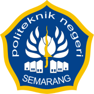

Sep 2022 - Agu 2026

Politeknik Negeri Semarang
Sarjana Terapan Teknik (D4) Elektronika, IPK 3,81/4,00
Mempelajari teori dan praktik perancangan rangkaian elektronik, sistem digital, pemrograman sistem tertanam, otomasi industri, sistem kontrol, dan instrumentasi. Mata kuliah mencakup sistem tertanam, robotika, kontrol cerdas, kontrol berbasis komputer, dan aplikasi IoT.
- Tugas akhir: Sistem Monitoring dan Kontrol Lingkungan Greenhouse Berbasis IoT untuk Budidaya Krisan.
- Organisasi kampus: Polines Mengabdi dan Polines Mengajar.